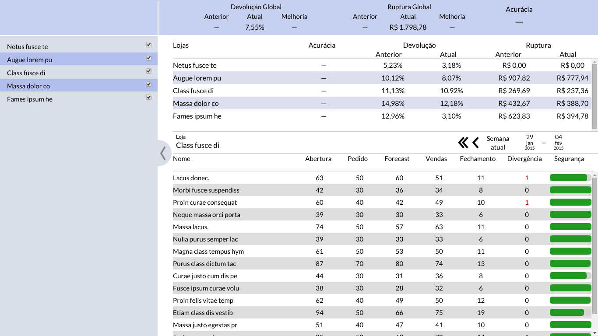
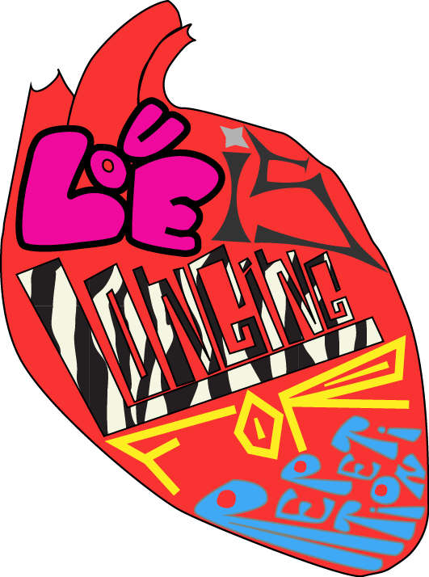
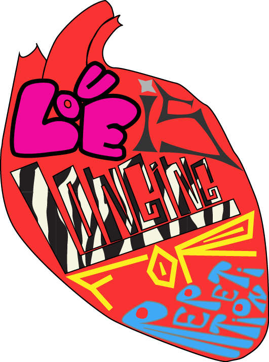

Sou formado em Física na USP e há 3 anos estudo Evolutionary Game Theory com a professora Carla Goldman no departamento de biofísica do IF-USP. A parte de "física" se refere ao modo de pensar e tratar os problemas e não ao objeto de estudo. Há cerca de um ano, montei no mesmo departamento um grupo de estudo.
Com o passar dos anos na faculdade decidi que a área acadêmica não seria suficiente para mim e comecei a estudar design e desenvolvimento web de maneira independente. Boa parte do que está neste portifólio eu aprendi deste modo: lendo livros, fazendo cursos, vendo tutoriais, pesquisando em fóruns e perguntando para amigos.
Além desses estudos, sou pianista (algumas das minhas composições estão disponíveis no meu soundcloud), gosto de cozinhar, jogar online e desenhar as pessoas durante a aula. Também toquei no Festival Música nas Montanhas , dançei no Festival de Inverno de Campos do Jordão, acompanhei o Coral USP ao piano em diversos auditórios e cantei Sibelius na Sala São Paulo, também pelo Coral USP.
Como a Para mais informações (inclusive currículo), entre em contato através do meu e-mail.
Flyer para divulgação em redes sociais feito para um grupo de alunos de Física da USP.

No meu último estagio fiz interfaces para alguns clientes (design e front end). Este é um modelo de gerenciamente de demanda (dados inventados).


Design de curriculo feito recentemente.

No meu último estagio fiz interfaces para alguns clientes (design e front end). Este é um modelo de gerenciamente de estoque (dados inventados).
Fiz algumas capas e confeccionei cadernos tipo moleskine, sob encomenda de amigos.
 

No meu último estagio fiz interfaces para alguns clientes (design e front end). Esta é uma pesquisa de mercado para coletar dados de um modelo de forecast.

Flyer para divulgação em redes sociais feito para um grupo de alunos de Física da USP.
No meu último estagio fiz interfaces para alguns clientes (design e front end). Este é um modelo de gerenciamente de demanda (dados inventados).
Design de curriculo feito recentemente.
No meu último estagio fiz interfaces para alguns clientes (design e front end). Este é um modelo de gerenciamente de estoque (dados inventados).
Fiz algumas capas e confeccionei cadernos tipo moleskine, sob encomenda de amigos.
No meu último estagio fiz interfaces para alguns clientes (design e front end). Esta é uma pesquisa de mercado para coletar dados de um modelo de forecast.
Estudo Web Development há um ano seguindo o ótimo currículo do Odin Project. Este currículo compreende tanto o aprendizado de frontend quanto backend (baseado em Ruby on Rails). Além disso, desenvolvi alguns projetos no meu último estágio exigiram conhecimentos de HTML, CSS e JavaScript, mas infelizmente não possuo esses códigos.
Toda a parte do meu estudo que se refere ao Odin Project está no meu GitHub, incluindo o meu primeiro html, meu último código de Rails e até o código deste portifólio.
Vou destacar aqui alguns trabalhos específicos que considero interessantes e os respecctivos links.: